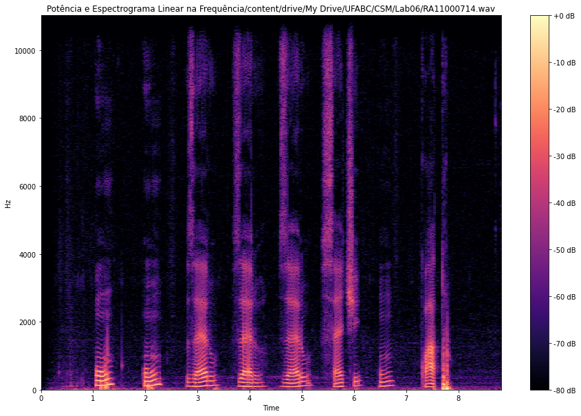

Dígitos
Contorno de energia, espectograma, pitch, f0 e formantes para o áudio com dígitos.
- Pitch: 7.2ms;
- Fundamental (f0): 139Hz;
- Formante f1: ~280Hz;
- Formante f2: ~400Hz;
- Formante f3: ~550Hz;
- Formante f4: ~700Hz;

Voz falada
Contorno de energia, espectograma, pitch, f0 e formantes para o áudio com voz falada.
- Pitch: 9.5ms;
- Fundamental (f0): 105Hz;
- Formante f1: ~225Hz;
- Formante f2: ~350Hz;
- Formante f3: ~550Hz;
- Formante f4: ~650Hz;
Poema
Contorno de energia, espectograma, pitch, f0 e formantes para o áudio com poema.
- Pitch: 1.55ms;
- Fundamental (f0): 645Hz;
- Formante f1: ~100Hz;
- Formante f2: ~200Hz;
- Formante f3: ~300Hz;
- Formante f4: ~300Hz;